Text Generation — A designer is showing off his T-shirt work. The white T-shirt has a bo
A designer is showing off his T-shirt work. The white T-shirt has a bold English letter printed on the chest,"Creativity is the greatest rebellion in existence."
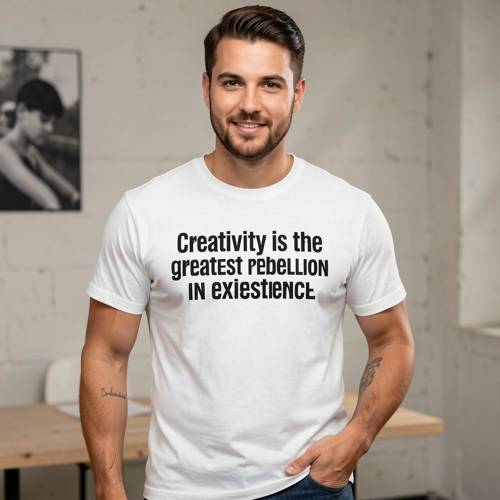
Direct — one call, no iteration
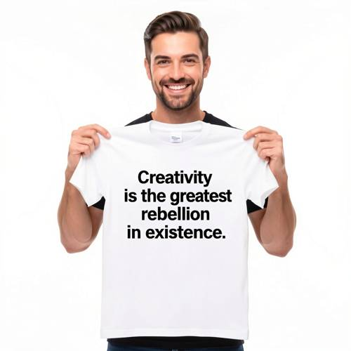
Continuum — Kimi K3 + FLUX.2-klein-9B
Judge — Direct
FAILText Generation — The text printed on the T-shirt is 'Creativity is the greatest PEBELLION IN EXIESTIENC£'. The words 'rebellion' and 'existence' from the prompt are misspelled as 'PEBELLION' and 'EXIESTIENC£'. Therefore, the text does not match the prompt's requirement.
Judge — Continuum
PASSText Generation — The white T-shirt in the image has black text printed on it. The text reads, 'Creativity is the greatest rebellion in existence.'. This text perfectly matches the text specified in the prompt, with no spelling errors, omissions, or extra words.
What the agent did
Thinking
The user wants an image: a designer showing off his T-shirt work. White T-shirt with bold English letter text on chest: "Creativity is the greatest rebellion in existence." I need to use flux2-klein for generation. Text rendering is tricky — long text on a shirt. Let me generate, then inspect text with inspect_region, and fix with edits.
Step 1 — `generate_image`
{
"prompt": "A male fashion designer proudly presenting his T-shirt design work, standing in a bright design studio, holding open the sides of a plain white T-shirt displayed toward the camera. The white T-shirt has bold black English capital letters printed across the chest reading \"Creativity is the greatest rebellion in existence.\" Clean studio lighting, fabric texture visible, sharp readable typography on the shirt, professional photography style.",
"model": "flux2-klein"
}
Result img_0
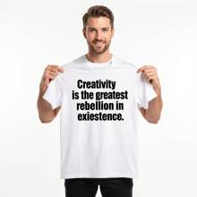
Thinking
The image looks good overall. The text appears to read "Creativity is the greatest rebellion in exiestence." — I need to zoom to verify the last line. It looks like "exiestence." possibly a typo of "existence." Let me inspect the text region.
Step 2 — `inspect_region`
{
"image": "img_0",
"padding": 0.1,
"roi": "the text printed on the T-shirt"
}
Result img_1
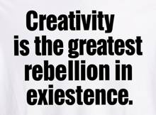
Thinking
The text reads "Creativity is the greatest rebellion in exiestence." — the last word is misspelled: "exiestence" instead of "existence". I need to fix that. I'll edit the image: replace "exiestence." with "existence."
Step 3 — `edit_image`
{
"image": "img_0",
"model": "flux2-klein",
"prompt": "Fix the misspelled word on the T-shirt: change \"exiestence.\" to the correct spelling \"existence.\" Keep the same bold black font and layout."
}
Result img_2
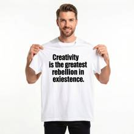
Thinking
At full scale it still looks like "exiestence." Let me zoom in to verify the last line.
Step 4 — `inspect_region`
{
"image": "img_2",
"roi": "the last line of text on the T-shirt, the word \"existence\""
}
Result img_3
Thinking
The crop grabbed only "Creativity". I need the last line. Let me crop with a rectangle. The text occupies roughly x 280-510, y 300-480 in a 768x768 image. The last line is around y 420-480. Let me crop [240, 380, 540, 500].
The crop is off — text is more central/right. The shirt text in img_2: "Creativity" spans roughly x 300-510? Actually the crop [250,400,530,500] shows "Creativit..." and "is the grea..." so y=400-500 covers the first two lines. Text lines: line 1 "Creativity" ~y 300-350, line 2 "is the greatest" ~y 350-395, line 3 "rebellion in" ~y 395-440, line 4 "exiestence." ~y 440-490. Hmm, but crop at y 400-500 shows lines 1 and 2, meaning lines are lower than I thought... Actually the crop shows "Creativit" at top portion and "is the grea" below. With padding 0.15 the crop expanded. Text seems to be located around y 380-560 maybe. Let me crop [280, 480, 560, 600].
Now I can see: "is the grea", "rebellion", "exiesten..." — still shows "exiestence" it appears. Let me get a clean crop of the last line fully: [300, 560, 620, 660] approximately. The last line "exiesten" appears at y ~600-640. Let me crop [280, 580, 620, 680].
The last line still reads "exiestence." — the edit did not fix the spelling. The typo persists: "exiestence" instead of "existence". The edit didn't change anything. Options: try edit_image again with a clearer prompt, maybe a different approach. Or use inpaint on the last line region. Inpainting text with FLUX.1 Fill might render the word; text rendering with inpaint is risky but a single word is feasible. First, let me try edit_image once more with an explicit prompt emphasizing removing the extra "ie". Maybe: "Rewrite the last line of text on the shirt to read 'existence.'" Try again with different wording.
Model
The misspelling persists ("exiestence"). Let me try the edit again with a clearer instruction.
Step 8 — `edit_image`
{
"image": "img_2",
"model": "flux2-klein",
"prompt": "Rewrite the last line of text on the shirt: the word is currently misspelled as \"exiestence.\" \u2014 replace it with the correctly spelled word \"existence.\" in the same bold black font."
}
Result img_7
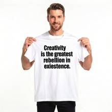
Thinking
It still appears as "exiestence." at full scale. Let me zoom in on the last line to verify. Crop [280, 580, 620, 680].
Still "exiestence." Two edit_image attempts failed to fix it. The model keeps anchoring to the existing misspelled text. Better approach: inpaint the last line region with FLUX.1 Fill, which regenerates from text only. But the masked fill of a single word might reproduce the typo since... no, inpainting is text-driven; the prompt says "existence." — it doesn't copy the old pixels. However, inpainting renders text less reliably than the base image. Alternative: inpaint the whole text block with the full correct quote. That's risky for 4 lines of text. Better: mask just the last line "exiestence." and inpaint with prompt "bold black text 'existence.' printed on white cotton t-shirt fabric". Let me segment. I can use segment with description "the last line of text on the t-shirt" or segment_boxes with box around the last line [290, 590, 610, 670]. Actually, from the crop, the last line spans roughly x 300-615, y 595-670 in the full image? The crop [280,580,620,680] with 10% padding showed "existence." occupying most of width. So the word spans x ~300-610, y ~600-665. Let me use segment_boxes with [[290, 590, 615, 670]].
Model
Two edit attempts failed to fix the typo. I'll switch to inpainting just the last line so it's regenerated from scratch.
The mask covers the last line text. But it hugs the letters. For a text swap with slight shape change, a small dilate (10-15) helps avoid anchoring to the old silhouette. Let me inpaint with prompt describing contents: bold black text "existence." printed on white t-shirt.
Step 11 — `inpaint_image`
{
"dilate": 12,
"image": "img_7",
"mask": "img_9",
"prompt": "Bold black sans-serif text reading \"existence.\" printed on white cotton T-shirt fabric, one single word followed by a period, matching the heavy black typography of the lines above."
}
Result img_10
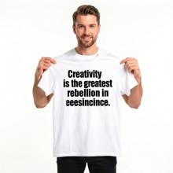
Thinking
Now the last line reads "eeesincince." — much worse. The inpaint fill rendered garbled text. Let me zoom to verify, but it's pretty clearly wrong: "eeesincince." FLUX.1 Fill struggled with rendering the word in this small region. Options: 1. Retry inpaint with different seed — worth one more try. 2. Go back to edit_image on img_7 (which had "exiestence" — closer, only one letter-pair wrong: "exie" vs "exi"). Actually "exiestence" → correct is "existence": the wrong part is "ie" after "ex". Maybe a very targeted approach: inpaint only the "ies" portion... too small, unreliable. Alternative strategy: regenerate the whole image via edit_image with instruction to fix the word; we tried twice, it anchored to the typo. Another idea: use edit_image on img_10 (garbled line) — the editor might have an easier time since the current text is obviously garbled? Prompt: "Replace the garbled last line of text on the shirt with the word 'existence.' in bold black letters." Let me first verify img_10's last line via zoom... it clearly reads "eeesincince." Skip verification; it's wrong. Try edit_image on img_10.
Model
The inpaint made it worse ("eeesincince."). Let me try a different edit approach on this version, since the garbled line may be easier for the editor to replace than the near-correct typo.
Step 12 — `edit_image`
{
"image": "img_10",
"model": "flux2-klein",
"prompt": "Replace the garbled last line of text on the shirt with the word \"existence.\" printed in the same bold black sans-serif font as the lines above it."
}
Result img_11
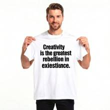
Thinking
Now the last line reads "exiestience." — hmm, looks like "exiestience." or "existence."? At this scale it looks like "exiestience." Let me zoom in on the last line.
It reads "exiestience." — still wrong (extra "ie" after "ex"). The model keeps producing "exie..." instead of "exis...". Attempts so far: 3 edit_image + 1 inpaint. All failed on this single word. New idea: regenerate the whole image fresh with the correct prompt, hoping generation spells it right. First generation got "exiestence" — one wrong. Maybe a new generation gets it right. But that discards the good composition. Policy says don't regenerate from scratch when image mostly works — but here the text is THE key element and repeated fixes fail. Alternative: try inpainting again with a different seed on img_7 (the "exiestence" version)? The inpaint produced garbled text once; a different seed might produce "existence." correctly. Alternative: split the last line differently. The problem is "exie" vs "exis". Hmm. Another idea: reformat the text layout. What if the text were split differently, e.g., last word on its own line "existence." Maybe prompt a full re-render of the text block via edit: "Reprint the entire text on the shirt to read exactly: Creativity is the greatest rebellion in existence." The editor anchors to existing letters, though. Or: try edit_image on img_11 with prompt "Fix the last word: it currently reads 'exiestience.' — correct spelling is 'existence.'" Different phrasing than before, on a new variant. Seed varies anyway. Or regenerate entirely. Given the importance of exact text, a fresh generation might land it. The quote is long; models often mess one word. We could iterate a few generations. Actually, a better trick: change layout so the word "existence." is isolated/emphasized — e.g., generate with text arranged so "existence." stands alone. But harness fixes size; regeneration is allowed ("if the subject does not fit, regenerate"). Regenerating is permitted when clearly wrong? The policy says don't restart to escape a small flaw. A one-letter-pair typo... it's the central message though, and the user explicitly quoted the sentence. Spelling matters. Let me try one more targeted edit on img_11 first — different phrasing. If that fails, regenerate fresh.
Step 14 — `edit_image`
{
"image": "img_11",
"model": "flux2-klein",
"prompt": "The last word on the shirt currently reads \"exiestience.\" which is misspelled. Correct it to \"existence.\" spelled e-x-i-s-t-e-n-c-e, keeping the bold black font."
}
Result img_13
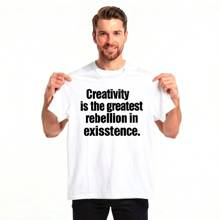
Thinking
Now it looks like "exisstence." — possibly still wrong (double s). Let me zoom in to verify the last line.
Now it reads "exisstence." — double "s", still wrong. So close! The model keeps failing on this word. Attempts: 4 edits + 1 inpaint on this word. Different approach: the model struggles with "existence" — likely a tokenization/frequency issue. What if I make the last line bigger / standalone? A fresh regeneration where the text layout puts "existence." on its own line in a larger font might render correctly. Or: another edit attempt — seeds vary, maybe one more. But 5 failures suggests a systematic issue with this word. Alternative: split into smaller change — inpaint only the middle of the word "ss" → "s"? Too tiny, unreliable. Let me try one more edit with different phrasing, explicitly noting "only one s after exi": "The last word reads 'exisstence.' with a double s — remove the extra s so it reads 'existence.'"
Model
"exisstence." — a double "s" now. Very close. One more targeted fix:
Step 16 — `edit_image`
{
"image": "img_13",
"model": "flux2-klein",
"prompt": "The last word on the shirt reads \"exisstence.\" with an extra letter s. Remove one s so it reads \"existence.\" \u2014 keep everything else identical."
}
Result img_15
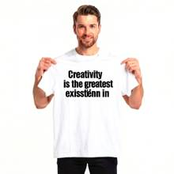
Thinking
Disaster — the edit destroyed the text: now it reads "Creativity is the greatest exisstlenn in" and the last line is gone entirely. This version is ruined. Best version so far: img_13 with "exisstence." (one extra s). Or img_7/img_2 with "exiestence." Given repeated failures editing this word in-place, the smarter approach is to regenerate the whole image fresh and hope the word lands correctly — maybe restructure the layout so "existence." gets its own line, which tends to improve rendering. Let me regenerate with a similar composition but text layout broken into more lines, e.g.: "Creativity is the greatest rebellion in existence." Putting "existence." within a shorter line "in existence." may help. Let me generate fresh.
Model
That edit destroyed the layout entirely. I'll discard it and regenerate fresh with a layout that gives "existence" a shorter line, which usually renders more accurately.
Step 17 — `generate_image`
{
"prompt": "A smiling male fashion designer presenting his T-shirt design, holding open a plain white T-shirt toward the camera in a bright studio. Bold black sans-serif capital text printed on the chest of the white T-shirt, arranged in five centered lines reading: \"Creativity / is the greatest / rebellion / in existence.\" Clean professional product photography, sharp legible typography, correct English spelling.",
"model": "flux2-klein"
}
Result img_16
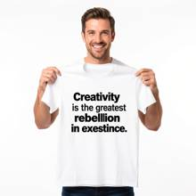
Thinking
Now the last line reads "in exestince." — wrong again ("exestince"). The word "existence" is consistently garbled by this model. Different variants: exiestence, exiestience, exisstence, exestince. It gets "ex" right but mangles the middle. Strategy: try editing "exestince" → "existence" here? Prior edits anchored to the existing typo. But variants keep changing, so a fresh attempt could work. Alternative: try a generation where "existence" is alone and bigger? The pattern suggests the model fundamentally struggles with this token sequence. Maybe spell it differently in the prompt to guide: write the word with hyphenation? Or maybe qwen-image? No — model is fixed to flux2-klein. Another idea: put the whole quote differently, or instruct "existence" spelled out in the prompt as "e-x-i-s-t-e-n-c-e". That letter-by-letter hint helped get "exisstence" closer in an edit. Let me regenerate with the spelled-out hint in the prompt.
Model
The word is mangled again ("exestince."). The model struggles with this specific word. Let me regenerate with the spelling spelled out letter-by-letter in the prompt as a stronger hint.
Step 18 — `generate_image`
{
"prompt": "A smiling male fashion designer presenting his T-shirt design, holding open a plain white T-shirt toward the camera in a bright studio. Bold black sans-serif text printed on the chest of the white T-shirt, arranged in centered lines reading: \"Creativity / is the greatest / rebellion / in existence.\" The last word is spelled exactly e-x-i-s-t-e-n-c-e. Clean professional product photography, sharp legible typography, correct English spelling.",
"model": "flux2-klein"
}
Result img_17
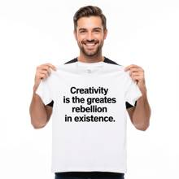
Thinking
Now the last line reads "in existence." — looks correct! But the second line reads "is the greates" — possibly missing the final "t"? It shows "greates" or "greatest"? At this scale: "is the greates" — the last letter might be cut. Need to zoom. Let me inspect the text block: [260, 360, 520, 540].
Model
The last line now looks correct ("in existence."). Let me verify the whole text by zooming in.
The crop is off — text is more to the right and lower. From the full image, the text block spans roughly x 280-490, y 370-535. Hmm, the crop [260,360,520,545] with 5% padding showed "Creati..." at bottom right, so the text is at lower part. Actually crop shows "Creativ" at y~150-200 of the crop... The crop region seems to cover the upper-left. Text "Creativity" in the full image starts around y=370. Let me crop tighter: [280, 360, 500, 540] without padding... that's basically the same. Odd. Wait, the displayed crop shows collar at top and "Creativ" partially — maybe the region got expanded weirdly. Let me just crop the right-center area: [300, 370, 510, 540].
Something's off with my coordinate reading. The crop [270,365,505,540] shows collar and top of "Crea" — meaning the text is lower than y=365? In the full image display (768px?), the text "Creativity" appears at around 47-52% height. If the actual image is 1024 tall, then 47% = ~480. The generated image is probably 1024x1024 while the preview shown to me is 768. So my coordinates based on the 768 preview are off by 4/3. Let me redo: in preview, text spans x 275-500, y 360-540 of 768. In actual pixels (1024): x 367-667, y 480-720. Crop [360, 470, 680, 730].
Model
The image is higher resolution than the preview, so my coordinates were off. Let me recalculate.
Now I can read clearly: - "Creativity" ✓ - "is the greates" — missing the final "t"! It reads "greates" (should be "greatest") - "rebellion" ✓ - "in existence." ✓ — correctly spelled now! Only one error: "greates" → "greatest". The word is cut/missing final t. Let me edit: add the missing "t".
Step 22 — `edit_image`
{
"image": "img_17",
"model": "flux2-klein",
"prompt": "The second line of text on the shirt reads \"is the greates\" and is missing its final letter. Change it to \"is the greatest\" with a letter t at the end, in the same bold black font. Keep all other text unchanged."
}
Result img_21
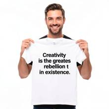
Thinking
The edit went wrong: now line 2 is still "is the greates" and line 3 became "rebellion t" — the "t" got appended to "rebellion" instead. Text now: "Creativity / is the greates / rebellion t / in existence." img_17 was better ("is the greates" only error). Let me mark img_17 as best so far, then try another edit on img_21 or go back to img_17. Actually, let me try editing img_21 to fix: change "greates" to "greatest" and remove the stray "t" after "rebellion". That's two changes — better split into two edits, or one prompt naming both. Multi-entity edits leak; but these are both small text fixes. Let me try one prompt: 'Fix two text errors on the shirt: the second line should read "is the greatest" and the third line should read "rebellion" with no extra letter t after it.' Or revert to img_17 and try again differently: "Add the missing letter t to the end of the word 'greates' on the second line so it reads 'greatest'." — that's essentially what I tried and it misplaced the t. Alternative: inpaint line 2 ("is the greates") with FLUX.1 Fill, prompt: bold black text "is the greatest". Earlier inpaint of a single word garbled it ("eeesincince"), but "is the greatest" are common words; still risky. Better plan: go back to img_17 (mark as best first), then try edit again with a more explicit prompt. Actually, since the model misplaced the "t", maybe instructing line-by-line rewrite works: "Rewrite the second line of the shirt text to read exactly 'is the greatest'."
Model
The fix went wrong — the "t" landed after "rebellion" instead. img_17 (with only the "greates" error) is the best so far; let me mark it, then retry from it.
Step 23 — `mark_best`
{
"image": "img_17",
"reason": "Correct composition and \"existence\" spelled right; only flaw is \"greates\" missing final t. Later versions have worse text errors."
}
Step 24 — `edit_image`
{
"image": "img_17",
"model": "flux2-klein",
"prompt": "Rewrite only the second line of the shirt text: it currently says \"is the greates\" \u2014 it should say \"is the greatest\" ending with the letter t. Do not change any other line."
}
Result img_22
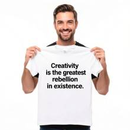
Thinking
Now the text reads: "Creativity / is the greatest / rebellion / in existence." — looks correct! Let me verify by zooming into the text block. Actual pixels: text spans approx x 290-495, y 380-540 in 768 preview → x 387-660, y 507-720 in 1024. Crop [370, 490, 690, 740].
Model
This looks correct now. Let me verify the text at full resolution.
The crop is slightly cut on the left, but I can read: - "Creativity" ✓ - "is the greatest" ✓ (the "is" is cut off on the left edge of the crop but visible: "s the greatest") - "rebellion" ✓ - "in existence." ✓ All four lines read correctly: "Creativity is the greatest rebellion in existence." Let me do a quick wider crop to confirm the left edges are fine (that "Creativity" has its C and "is" has its i). Crop [350, 490, 700, 740].
The full text is verified: "Creativity / is the greatest / rebellion / in existence." — all correctly spelled, bold black letters on a white T-shirt held by a smiling designer. The image fully matches the prompt. Mark img_22 as best.
Step 27 — `mark_best`
{
"image": "img_22",
"reason": "All four lines of the T-shirt text verified correct at full resolution: \"Creativity is the greatest rebellion in existence.\" Bold black typography on a white shirt, designer presenting his work \u2014 fully matches the prompt."
}
Thinking
Done. Summarize for the user.
Model
The image is complete. Here's a summary of the process: **Final result:** A smiling designer proudly presenting his white T-shirt, with bold black text on the chest reading: > **Creativity** > **is the greatest** > **rebellion** > **in existence.** **How it went:** The tricky part was the typography. The model repeatedly stumbled over the word "existence" (producing "exiestence," "exisstence," "exestince," etc.) across several edits and even an inpainting attempt. The breakthrough came from regenerating with the word spelled out letter-by-letter in the prompt — that nailed "in existence." on its own line. One last targeted edit fixed the final flaw ("greates" → "greatest"), and I verified every word at full resolution before finishing.